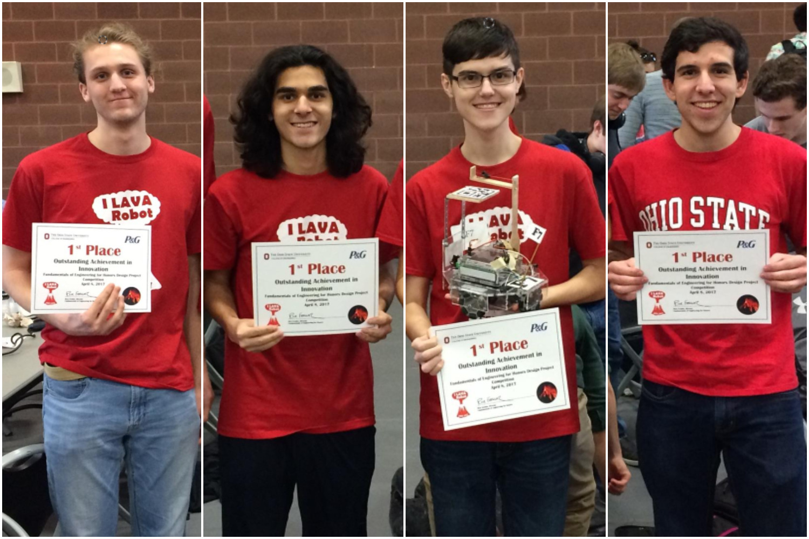

Cape Hero - In Progress
A personal project where I use the knowledge I gained in my Super Mario Bros Clone project to create a small, basic 2D platformer. The game will be written in C++ with scripting in Lua. The game itself is not as complex as Super Mario Bros; it is more just a way to introduce myself to programming in C++ while maintaining high quality coding practices. When the game is finished, it will be available for download here. For now, you can check out the code here.
Original Super Mario Bros Clone - CSE 3902
Worked in a team of four to create a clone of the first level of the original Super Mario Bros. Used Agile Scrum methodologies to work efficiently and with flexibility. The project introduced basic, key concepts to not only writing code that works, but keeping code that works readable and maintainable. The final project can be downloaded here. I have to keep the repository private, but feel free to contact me and I can share the code with you.
video
Fundamentals of Engineering Honors Robot Design Project
Worked in a team of four to build and program and small robot that competed against other students' robots in a race. Learned fundamental engineering design principles and learned key aspects to leading a team from a programming standpoint. Gained experience in being introduced to new tools and how to quickly learn to use them in order to meet strict deadlines while producing high quality products. Documentation of project can be found here. The password is master_f7.
